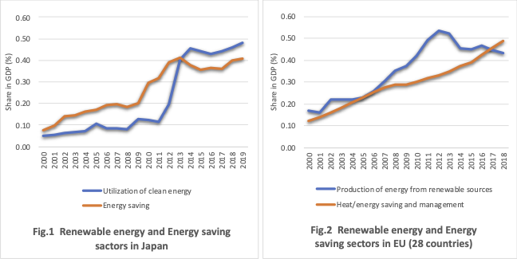

Japan's Environmental Sector Growing towards Decarbonization
06/06 2022
Author: Kazuhiro Okuma
The Environmental Goods and Services Sector Accounts in the EU is a well-known statistic for measuring the environmental industries, and the Ministry of the Environment in Japan has also been conducting the Survey of the Market Size of the Environmental Industry.
Based on these statistical data, let us look at the trends in the renewable energy and energy saving related sectors for Japan and the EU, which are directly related to decarbonization. Figure 1 and Figure 2 show the share of these sectors in GDP for Japan and the EU, respectively, since 2000. Since the definitions and estimation methods differ between Japan and the EU, we have adjusted the Japanese data by narrowing down the sectors related to energy conservation to be closer to the EU statistics. Comparisons of the magnitude of the values need to be made with caution, but comparisons of trends are possible.

The increase in the renewable energy and energy conservation sectors is evident in both Japan and the EU. They have reached 0.4 to 0.5% of GDP in both Japan and the EU, a level that does not seem to be significantly different.
Energy conservation has been increasing almost consistently in both Japan and the EU. In Japan, a peak can be seen around 2013, but this is mainly due to an increase in housing, etc., and may reflect reconstruction demand after the Great East Japan Earthquake. On the other hand, the renewable energy sector has shown different trends in Japan and the EU. In the EU, the renewable energy sector has consistently increased from 2000 to around 2012. In contrast, Japan's renewable energy sector was at a low level until 2011, but has been increasing rapidly since 2012. This reflects the introduction of a feed-in tariff in 2012 and the strengthening of policies to promote renewable energy. While this can be seen as a sign that the scale of the renewable energy sector has largely caught up with that of the EU, there is also the view that the policy delays up to that point have led to a delay in the competitiveness of related industries.
In Japan, a law to promote offshore wind power generation has been enacted, and demand for renewable energy-related industries is expected to expand even more rapidly. The question will be whether this growth in demand can be translated into growth in Japan's related industries.